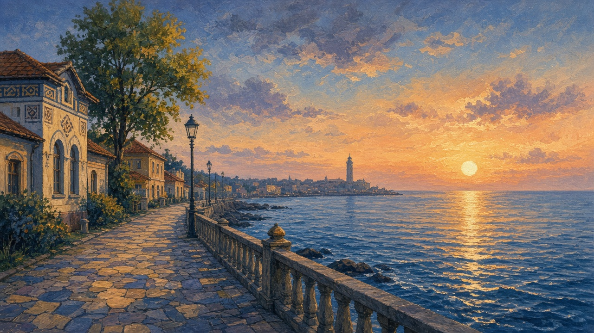
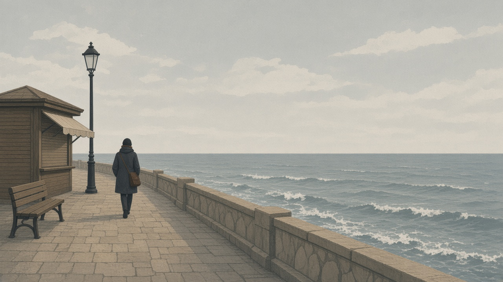

The sea
Marea. Not the river story. The open Black Sea, salt in the wind, and the short Romanian coast people still mean when they say la mare — to the sea.

The eastern edge
Most of the country turns inland. Mountains, maize, a yard, a river with a name. Then the land simply stops. The mare, the sea, is the eastern edge: not a valley, not a ford, not the Danube’s last reeds. Open water. A different smell. A wind that does not come off a ridge. The Romanian shore is short. Sand, a stone wall, a working port, and behind all of it the Dobruja steppe, dry and bright. A village a few kilometers inland can feel as if it has no sea at all — maize, dust, a different wind. The rivers page ends where the Delta meets salt — that last branching is the delta. This page starts there. What still lives in those reeds is on wildlife. Out here the water is the Black Sea, and it does not care about the creek that fills a bucket in the hills.
The window
Constanța is how most people reach it. Tomis was the old name. The city history — the Greeks, the exile, the Ottoman harbor, the year the coast became Romanian — sits on the Constanța lesson. This page is the window as it is used. The port is work: cranes, rails, a smell of fuel, shifts that do not follow the beach calendar. Mamaia is a July word for inland families; the harbor does not take that week off. The promenade is the public face, a walk over the wall with a pale pavilion behind you and boats below. North of the city people say Mamaia when they mean the summer strip: a long plajă, the beach, a lake on one side and the sea on the other. They do not dress it up. They say Mamaia, or simply la mare. South the coast continues toward Mangalia. The names change. The salt does not.
Day to day
In July the trains and buses fill. Families from inland cities bring bags, a child who has been promised the water, and a week in a rented room. The plajă is crowded. The water is the point. A stall still sells fish on ice, and something fried in paper that you eat standing. In winter the same promenade empties. Wind, a closed kiosk, a walker in a coat who did not come for a tan. The sea does not leave. The holiday does. Inland from the wall the Dobruja stays steppe: light, dust, a sky with no ridge to stop it. Harbor families keep the year by the port, not by the beach season. That is the ordinary split: one water, two calendars. The inland cold is on winter; this page is the salt edge of the same months.
Fish on ice
The stall sits by the wall, not in a room. A box of ice, pește — fish — laid across it, a price said once. Someone fries a piece and hands it over in paper. You eat standing, the mare in front of you and the street at your back. In July the queue is longer. In a quieter month the same box is there if the boat came in. This is not the catch from a reed channel, the carp that goes into a pot the same day — that water is on the delta. This fish already tastes of the salt it came out of. You do not need a menu. You need the habit of asking whether the ice is still cold, and whether the person selling it was here yesterday too.

The empty promenade
January is the same wall and almost nobody on it. The kiosk shutter is down. A bench holds a thin skin of salt. One person in a coat walks the length of it because the air is the point, not a tan. The wind comes off the water and finds the collar. Spray hits the stone and dries white. The pale pavilion does not close for the season. Boats below look smaller in the flat light. The inland version of these months — the woodpile, the lane, the stove — is on winter. Here the cold has a taste. You do not need a forecast. You need the habit of buttoning the coat before you say you will only go as far as the corner.
South, toward Mangalia
Past the city the shore does not turn into a list. It turns into a road with the water on one side and houses on the other. People who live there all year know which bus still runs in February and which stall shuts when the weekenders leave. Mangalia is where that road is going: a smaller harbor, a town that still works when the plajă does not. The older Greek name belongs to the Constanța lesson. This page keeps the lived edge — a yard that faces the salt, a winter morning with the same wind, a summer afternoon when the inland families have gone farther down and the street is still a street. You do not need the names of the resorts in between. You need the habit of asking whether the story stops at Mamaia or keeps south with the people who stay.
Behind the wall
Turn inland and the salt drops in a few streets. The steppe takes the air: dry light, maize, a bus stop that still names the city, a wind that never crossed a beach umbrella. A village here can hear la mare all July and still not smell it. The holiday week is already kept short on the year. What this side of the wall keeps is dust on a shoe and a sky with nothing to stop it. You do not need a map of the steppe. You need the habit of noticing how fast the mare leaves the air once the street turns away from it.
A small blue corner
On the maps plate the sea is a small blue corner. It is still the country’s only salt horizon. You do not need a list of resorts. You need the habit of asking whether a story is standing by a river or by the mare — and if it is the mare, whether it is the crane, the fish on ice, the empty promenade, or the week in Mamaia that someone still talks about in January.